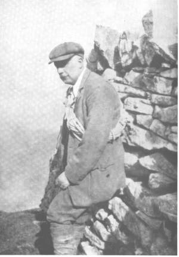

BY the death of Alfred Valentine Valentine-Richards Cambridge has lost a distinguished mountaineer and a man of great kindliness. More than anyone else he helped to bring the Cambridge University Mountaineering Club to its present state of vigorous efficiency, and he may well be called the founder of the less vigorous though equally flourishing Cambridge Alpine Club.
Valentine-Richards came up to Christ’s from Uppingham in 1885. He was fourth Wrangler in 1888 and took a first class in the Theological Tripos in 1890. For a short time after taking his degree he did some lecturing work in Cambridge, and then for a number of years lived at his home in Wimbledon and spent much time abroad. It was during these years that he acquired his skill as a mountaineer and amassed his wide knowledge of Alpine matters. He returned to Christ’s as a fellow and lecturer in 1904 and became dean in 1906.
We of a younger generation who knew him in the years that followed, were well aware of the vast storehouse of mountain knowledge that was his, but it was only rarely that he spoke of his own climbing exploits. It is a pity that there is so little in print about his early climbing expeditions. His articles in the Alpine Journal are masterpieces of accurate information and detail; but one could wish that he to whom the mountains made such an appeal had left more on record of the joy and feeling that they aroused in him.
It requires a particular bent of mind to keep pace with and co-ordinate the various developments of Alpinism. Valentine- Richards possessed the necessary critical capacity and pains- taking accuracy in a high degree, and when the Alpine Club decided to bring Ball’s Alpine Guide up to date as a memorial to its first president, it fell to Valentine-Richards to take in hand the general editorship of The Central Alps, Part I. Anyone familiar with this great guide – the model perhaps for all mountain guide-books – will appreciate the immense amount of labour that must have gone to its re-editing. Valentine- Richards began his task in 1901 and his volume was published.
In the years that followed his return to Cambridge he became the friend of generation after generation of under- graduates. He continued to spend his summers in the Alps and often took undergraduates with him. He also took parties to North Wales and the Lake District. He was the ideal com- panion as all who have memories of those delightful holidays will agree. His activity and energy amazed the younger members of these parties. Often the expeditions were pro- longed to surprisingly late hours and it was long after night- fall when we tramped back over the fells after the rock- climbing had been done. It was a point of his never to be benighted, and I think he succeeded in this, though I remember one day getting down to Langdale at 3 a.m., after some wet climbs on Scafell and a delay of several hours on the Pike in mist and complete blackness. To all who climb the rocks must become a measure of the passing of years, and in those days Valentine-Richards preferred not to lead rock climbs; but there could never have been a more helpful and patient second on a rope. Sometimes, perhaps, too much patience was demanded of him, as on one occasion when a leader in order to renew his attack on the top block of the Napes Needle adopted a surprising and rapid, though perhaps not uncontrolled, slithering descent to the shoulder below. I think it was good advice of Valentine-Richards to leave the Needle for that day and to pass on to the Needle Arête.
In the War years there was the inevitable break in his visits to the hills. He turned his activities to the Boy Scouts, and scouting became one of his chief interests throughout his latter years – indeed, he carried on his camping with scouts when it seemed almost impossible that his health was good enough to stand it.
When Cambridge revived after the War Valentine-Richards at once got together a nucleus to reform the Cambridge University Mountaineering Club. Numbers rapidly increased until by degrees the club has reached the big membership it now has. When numbers were smaller the club frequently met in Valentine-Richards’s rooms in Christ’s. He was the perfect host for such gatherings, which were rather more informal and certainly less ambitious as regards discourses than is now the case. It was a great privilege that the club should have held so many of its meetings in his delightful rooms. There was much in the surroundings there – his Alpine books, his pictures, his fine collections of furniture and china which conduced, more perhaps than one was conscious of at the time, to make these meetings so successful. I know it was a great happiness to Valentine-Richards in the days when his climbing career was drawing to a close to have so many young mountaineers coming to him. His help was inestimable. The club is largely his achievement and is the outcome of bis mountain knowledge and experience.
He had a few summers in the Alps in the post-War years. Once he was at Saas Fee, where he was particularly pleased with what he was still able to do, and .html year he went to the Belvédère (Furka); but in 1924 when he last visited Kandersteg it became clear that he was no longer equal to the exertion of long mountain days.
The photograph which accompanies these lines was taken in April 1923,.at the top of the slabs on Carnedd y Filiast, the last spring holiday in which Valentine-Richards did any rock climbing.
During the remaining years of his life he suffered from an illness which made it increasingly difficult for him to get about. However, he was active in lecturing and other Cambridge duties until his death last April at the age of 66.
In what I have written I have had Valentine-Richards the mountaineer in view. Others will remember him in other ways, with affection as a most approachable dean of their College, or for his scholarship in theological matters. Some will recall him as a connoisseur and collector of china, glass, and silver, and for his keen interest in gardening and flowers. He had wide interests which led him into many pleasant paths, and his joy in the mountains and his great love for them inspired him in all that he did. C. M. S.
HON. TREASURER OF THE CLUB, 1927 – 28
WATKINS began his climbing career while still at school at Lancing, going to the Lake District in April 1924 with one of the masters, Mr. E. B. Gordon. Both were beginners, and his companion emphasizes that of the two it was Watkins who provided the necessary enterprise, chose climbs, and acted as leader. Opportunities in the Alps came the same year, when he was at Chamonix with his parents. Mr. Gordon joined him, and together they climbed the Grands Charmoz and the Aiguille de l’M. In 1925 he was again in Switzerland and made some climbs, among them the traverse of the Petite Dent de Veisivi, with Emile Gysin, a student of nineteen who hoped to qualify in time for his guide’s certificate. Later in the same year Watkins was chamois hunting with his father in Tyrol, and had a narrow escape, falling 150 ft. down steep rocks.
His big Alpine year was 1926, when he spent over six weeks almost entirely with Gysin. Watkins wrote out a list of his expeditions in Gysin’s diary, from which it appears that they followed a more or less high level route from Chamonix to Zermatt, the order of events being roughly: Aiguille du Moine, Aiguille de la Persévérance, Aiguille de la Neuvaz, Pointe des Amethystes, Aiguilles du Tour, Aiguilles Marbrées, traverse of Mont Grépillon and Mont Dolent, Grand St. Bernard, Mont Velan, Col des Maisons Blanches, La Ruinette, and various passes via Arolla and Zinal to St. Nicolas and Zermatt; traverse of Monte Rosa from Bétemps Hut to Macugnaga, and back by New Weissthor and Cima di Jazzi; Aiguille de la Tsa and Pigne d’Arolla; and later on Mont Blanc and the Grands Charmoz.
My own friendship with Watkins dates from the spring of 1926, and our mutual interest was in Arctic rather than Alpine matters. Watkins received his Arctic inspiration from R. E. Priestley’s lectures, given at Cambridge intermittently from 1923 to 1930, a course which it is hoped may be revived again soon in some form or other. I had planned an Arctic expedition for 1927 with Watkins as a member, but when it was postponed Watkins immediately decided to lead a party himself. He was then twenty. He chose Edge Island in East Spitsbergen as his objective, and chartered the motor sloop Heimen of Tromsö for his party of nine. They explored and mapped parts of Edge Island, and found unexpectedly that the interior was not completely ice-covered as formerly thought. This caused an important change in Watkins’s plans; he had hoped to sledge across the island, but the actual crossing of the interior was in the end made on foot.
On his return he decided almost immediately to visit Labrador in 1928, and to remain over the winter. His companion was J. M. Scott, and together they learnt how to travel by canoe and dog sledge. Watkins returned from his training year in Labrador unusually well-equipped for extended Arctic explorations.
Plans for a great Greenland Expedition were made, and in July 1930 Watkins took a party of fourteen, constituting the British Arctic Air Route Expedition, to winter on the east coast near Angmagssalik. Several hundred miles of the coast were explored in detail for the first time, partly by ship, partly from the air. On one of the flights Watkins sighted an entirely new range of mountains in 69°N. latitude, the highest in the Arctic, estimating their height at 12,000-15,000 ft. (Last year – 1933 – this range was actually flown over by Colonel Lindberg, who assigns a definite height of 13,000 ft.) The Greenland ice cap was crossed by two sledge parties in the early summer of 1931, one to Ivigtut, the other to Holsteinborg. There had also been an attempt in spring to climb Mount Forel, over 11,000 ft., L. R. Wager leading a party to within about 700 ft. of the summit. Watkins concluded the explorations by making a hazardous boat journey with two companions round Cape Farewell to Julianehaab. On his return he was awarded the gold medal of the Royal Geographical Society as a tribute to his leadership of the most important Arctic expedition which had gone from this country since 1875.
Watkins’s last expedition was made a year later when he returned to East Greenland, this time with only three companions, to complete the necessary groundwork for the Arctic air route. In August 1932, a few weeks after arriving on the coast, he was drowned while hunting from his kayak; no details are known, except that some chance must have made it necessary for him to take to the water, and that he was overpowered by the cold before being able to regain his kayak.
Watkins must have made an ideal climbing companion. Mr. Gordon says of him that he "was an enterprising climber and cautious, as I suppose the best climbers always are." Gysin refers particularly to his powers of endurance, to his prudence, and to his aptitude for rapid decision when necessary.
These are among the special qualities demanded of an Arctic leader, and Watkins succeeded in leadership in a marked degree. He chose his men well and trusted them, giving them a wide latitude in all they did. He was always ready willing at any time to modify his plans as hindrances occurred or new opportunities appeared. These were some of the secrets of his success, which places him in the front rank of Polar leaders, with McClintock, with Shackleton, and with Nansen. J. M. W.
DAVID BEST, who joined the club as soon as he came up to Queens’ in1928, and was one of its most active supporters, was Secretary in his last year (1930-31).
As a boy he had lived in the Pennines and been at school al Kendal, so that he had ample opportunity of taking advantage of the fells that attracted him so much, and he was lucky enough to be able to begin rock-climbing much sooner than most people. His enthusiasm for climbing was as boundlessly ambitious as it was for anything else that interested him. He always aimed at something better and more exciting, but not without fully appreciating what he was actually able to do; probably he enjoyed, more than any of his later climbing, his early expeditions from school to Sleddale, where he explored almost unknown crags on summer half-holidays.
As a result of his remarkable keenness, by the time he came up to Cambridge, Best was one of the most capable and agile rock-climbers in the club, and it was only the difficulty of his going out to the Alps more often that prevented him from becoming as accomplished a mountaineer as he was a rock- climber. He was a fearless climber, who always took it for granted that he could get up anything that confronted him, but he never gave the impression that he was climbing near his margin of safety, and his own confidence inspired unexpected success in his more timid companions.
After taking honours in Mathematics and Engineering, Best worked for the Gaslight and Coke Company before joining the Air Force, and it was only a year after he went down that he was killed in a flying accident. His early death has robbed us, his climbing friends, of a delightful companion and has spoilt, almost before it had begun, a mountaineering career which showed every sign of being a very remarkable one. C. B.
HEWLETT EDWARDS came up to St. John’s in 1931, and the following year proceeded to Westcott House, with the intention of taking orders. He came of a family whose members have all shown a natural aptitude for climbing and, indeed, he might well have been one of the most brilliant climbers of his day, had he taken the sport seriously, for he combined just that right amount of dash and restraint which form the essential make-up of a great leader. His work at Cambridge, however, precluded all but occasional visits to the mountains.
It was when returning from one of these visits that he was involved in a motor-cycle accident, and received head injuries to which he succumbed some three hours later. The previous afternoon he had made a solitary descent of the Devil’s Kitchen, no slight achievement, as those familiar with Welsh rocks will admit.
Although he had been a member of the C.U.M.C. since he first came to the University, he had attended only one meet, that at Helyg in January 1933, and few members of the club knew him well. Only those of us who were his intimate friends and enjoyed his delightful companionship can realize how great a loss the club has suffered in the death of a man who was so sound in every way. S. B. D.